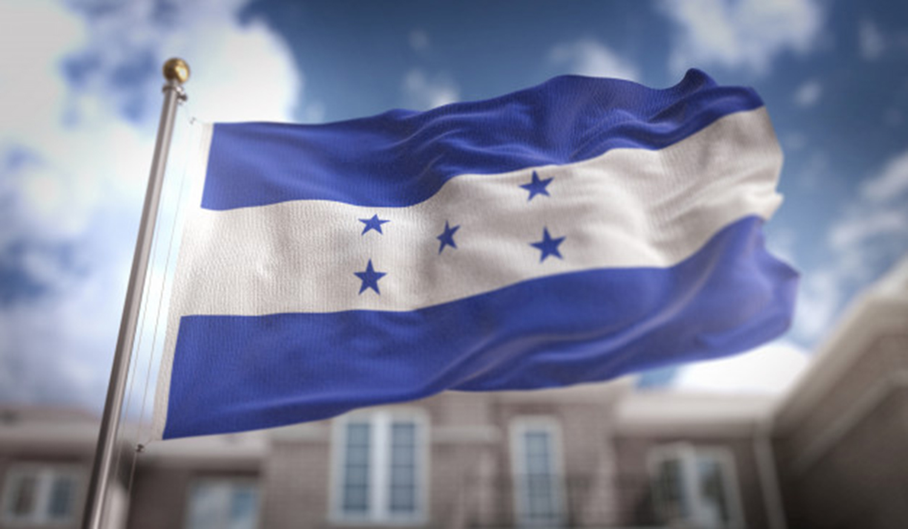
La República de Honduras, situada en el centro-norte de
Centroamérica, cuenta con una población de aproximadamente 8.7
millones de habitantes. Su capital es Tegucigalpa. El territorio
de Honduras es muy accidentado, formado por altas filas de
montañas, elevadas planicies, y profundos valles en los que se
encuentran extensos y fértiles llanos cruzados por caudalosos
ríos lo cual contribuye a su rica biodiversidad. Su privilegiada
ubicación entre dos océanos y sus condiciones topográficas
crean una gran variedad de hábitats, desde bosques nublados
hasta arrecifes coralinos, favorables para una alta diversidad
de flora y fauna. Honduras es un país multiétnico,
multicultural y multilingüe con cuatro grandes familias
étnicas: los blancos o mestizos que son la mayoría,
los pueblos indígenas (lencas, misquitos, tolupanes,
chortis, pech, tawahkas), los garífunas y los criollos
de habla inglesa. Aunque el idioma oficial de Honduras
es el español, la Constitución se compromete a preservar
y promover las culturas nativas.
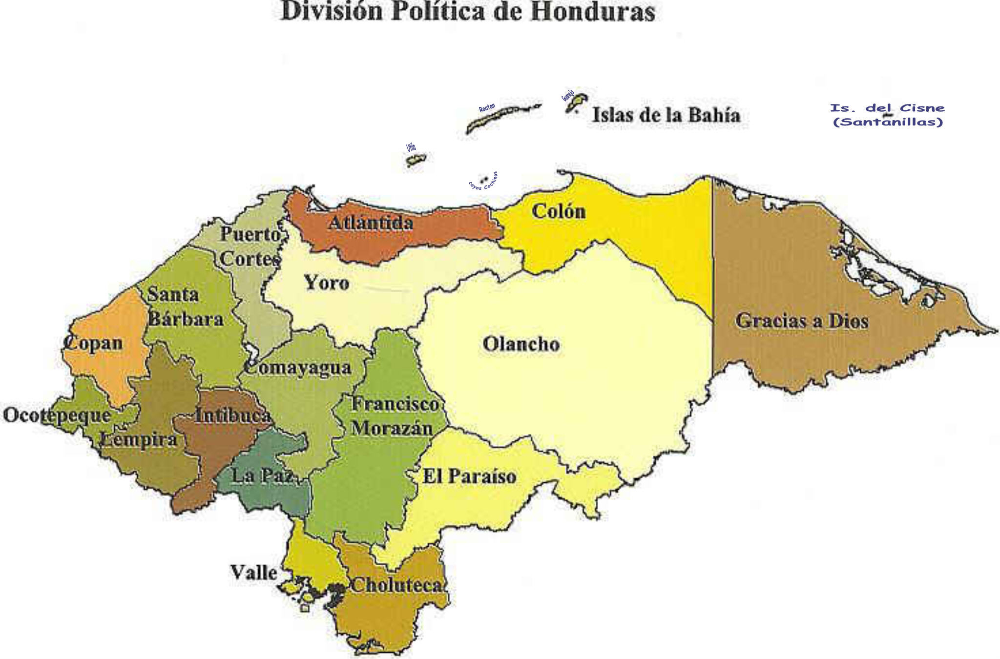
Honduras posee 112,492 km²
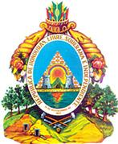
Escudo Nacional
El escudo de Honduras fue creado por el Decreto Legislativo el 3 de octubre de 1825, siendo Jefe de Estado Dionisio de Herrera, está compuesto por símbolos alusivos al territorio, historia y la variedad de recursos naturales que posee el país.

Bandera Nacional
La bandera de Honduras fue creada el 16 de febrero de 1866, siendo Presidente de la República don José María Medina.
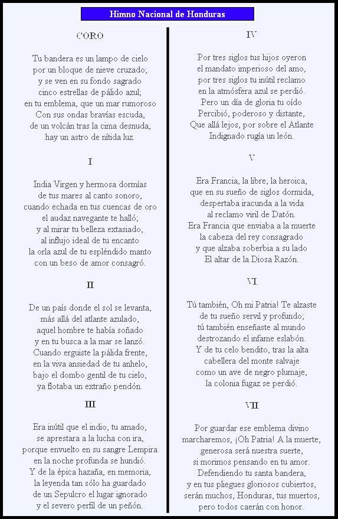
Himno Nacional
El Himno Nacional de Honduras es uno de los tres símbolos patrios establecidos por la ley en dicho país junto con el escudo y la bandera.
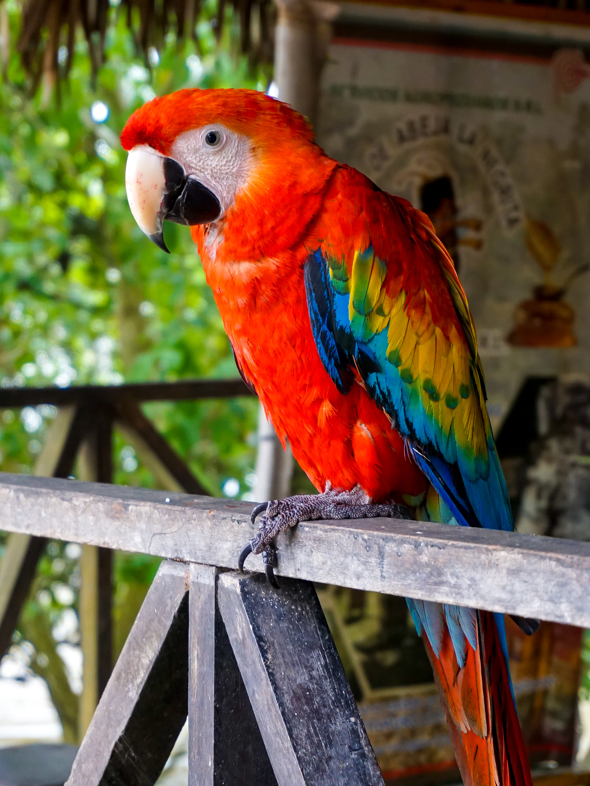
Ave Nacional
La guacamaya roja, guacamaya macao o guacamaya bandera (Ara macao) es una especie de ave perteneciente a la familia de los psitácidos.
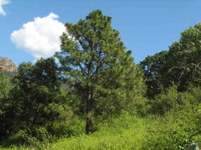
Árbol Nacional
El Pino fue elegido por el gobierno del entonces presidente Miguel Paz Barahona, quién mediante acuerdo No. 429 emitido el 14 de mayo de 1928 resolvió declarar el Pino como Árbol Nacional de Honduras.
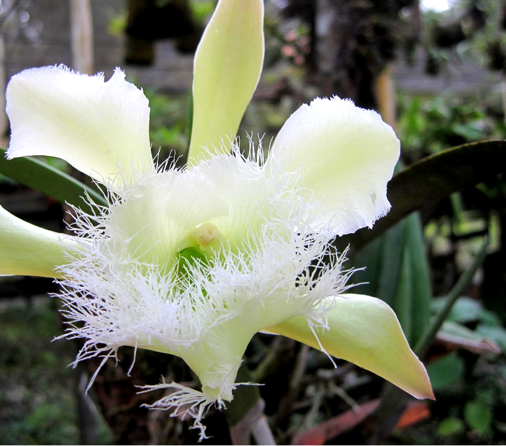
Flor Nacional
La Orquídea (Rhyncholaelia digbyana) fue declarada Flor Nacional de Honduras el 25 de noviembre de 1969
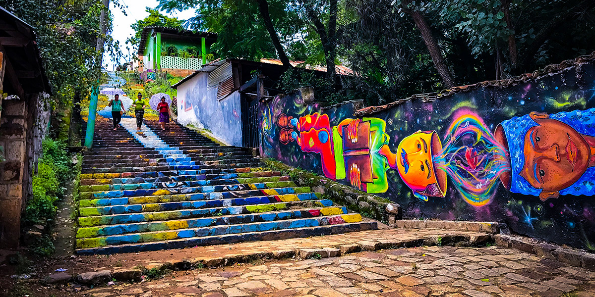
Cantarranas
Cantarranas es un municipio del departamento de Francisco Morazán, Honduras.
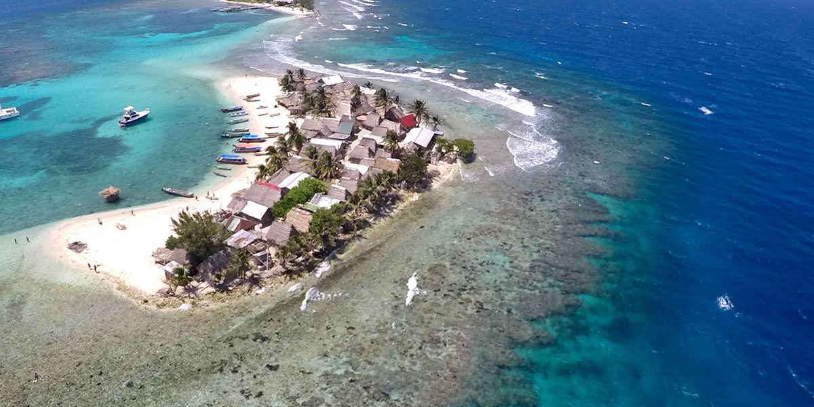
Cayos Cochinos
Los Cayos Cochinos son un grupo de islas que está formado por dos pequeñas islas y 13 cayos más pequeños de origen coralino situados 30 kilómetros al noreste de La Ceiba.
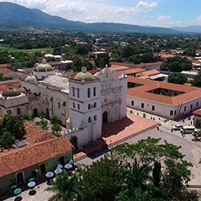
Comayagua
Comayagua es una ciudad hondureña, capital del departamento homónimo emplazada en el valle también de su mismo nombre, situada en la región central de Honduras.
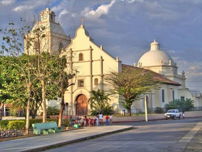
Choluteca
Choluteca, oficialmente denominada Ciudad de Choluteca y también conocida como la Sultana del Sur, es una de las ciudades coloniales más antiguas de la república de Honduras.
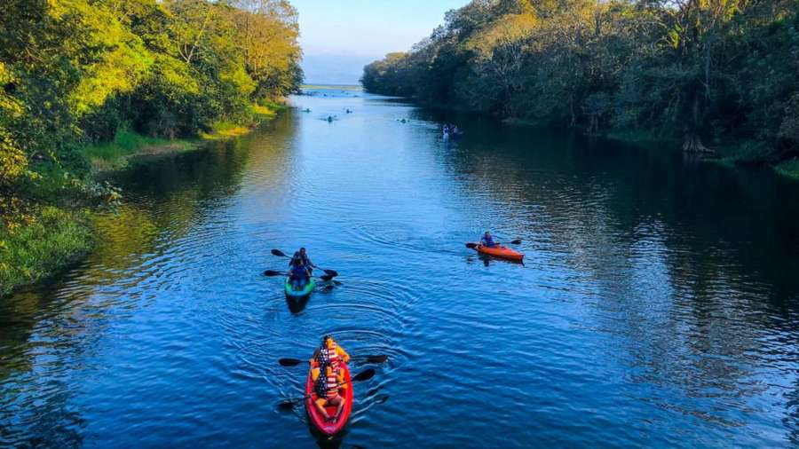
Lago Yojoa
El Lago de Yojoa es un lago de Honduras, Centroamérica, tiene una longitud de 16 km y un ancho de 6 km, se encuentra localizado entre los departamentos de Comayagua, Cortés y Santa Bárbara.
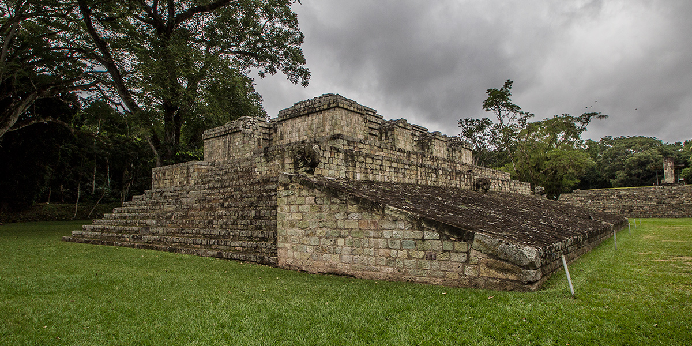
Ruinas de Copán
Copán es un sitio arqueológico de la antigua civilización maya ubicado en el departamento de Copán al occidente de Honduras, a poca distancia de la frontera con Guatemala.